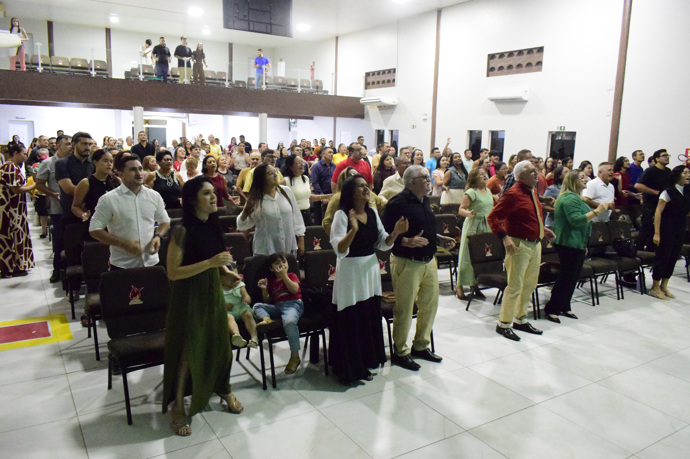
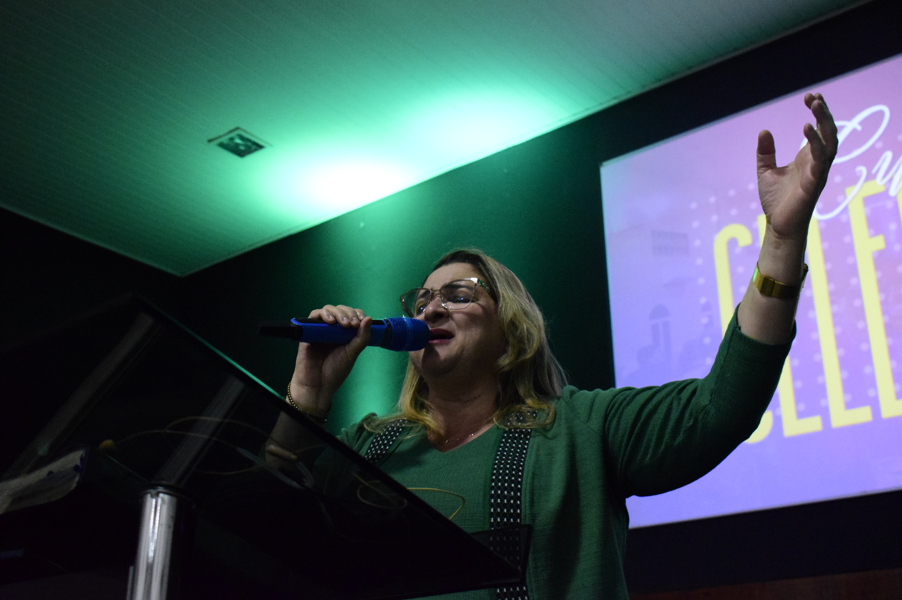

QUEM SOMOS
Uma igreja para caminhar juntos.
A Igreja Betesda Central é uma comunidade cristã localizada em Quixeramobim, Ceará. Somos uma igreja formada por pessoas que desejam conhecer a Deus, crescer na fé, viver em comunhão e servir ao próximo.
Acreditamos que a caminhada cristã não precisa ser vivida sozinha. Por isso, valorizamos relacionamentos, discipulado, comunhão e o desenvolvimento dos dons e talentos que Deus confiou a cada pessoa.
Nossa igreja é formada por diferentes gerações, ministérios e pequenos grupos, unidos pelo desejo de seguir a Cristo e participar daquilo que Ele está fazendo em nossa comunidade.
"Vós, porém, sois geração eleita, sacerdócio real, nação santa, povo exclusivo de Deus, para anunciar as grandezas daquele que os chamou das trevas para a sua maravilhosa luz."1 Pedro 2:9

NOSSA IDENTIDADE
Aquilo que nos guia.
Estes pilares representam a direção que queremos seguir como comunidade.
Nossa Missão
Proclamar o Evangelho, fazer discípulos e contribuir para que pessoas conheçam a Cristo e cresçam em sua caminhada de fé.
Nossa Visão
Ser uma comunidade que vive o Evangelho de forma prática, fortalecendo famílias, formando discípulos e servindo a comunidade.
Nossos Valores
Fé, amor, comunhão, discipulado, serviço, acolhimento, oração e compromisso com a Palavra de Deus.

NOSSA COMUNIDADE
Pessoas diferentes, caminhando juntas.
Na Betesda Central, diferentes gerações e histórias se encontram. Crianças, adolescentes, jovens, adultos e famílias fazem parte da nossa comunidade.
Por meio dos cultos, ministérios e Pequenos Grupos, buscamos criar espaços onde as pessoas possam desenvolver relacionamentos, cuidar umas das outras e crescer juntas.
Conheça nossos ministériosNOSSA HISTÓRIA
Uma história que ainda está sendo escrita.
Toda comunidade carrega uma história: pessoas, momentos, desafios, conquistas e testemunhos que fazem parte de sua caminhada.
Em breve, você poderá conhecer a trajetória da Igreja Betesda Central e descobrir como Deus tem conduzido essa comunidade ao longo dos anos.
Conheça nossa história